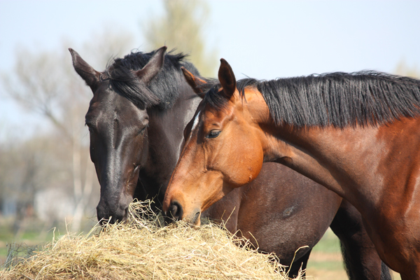

Die Raufutterautomaten
Heu ist das Grundnahrungsmittel der Pferde. In der freien Natur ernährt sich das Pferd nur von Raufutter. Wenn ein Pferd vom Kauen müde wird, gibt es ihm ein Sättigungsgefühl. Da es bei der Aufnahme von Heu zwischen 70 und 90 Kauschläge pro Minute macht, ist dies dafür besonders gut geeignet. Es sollte ihnen mehrmals täglich angeboten werden. Ausserdem verhindert das Raufutter das Entstehen von Magengeschwüren.
